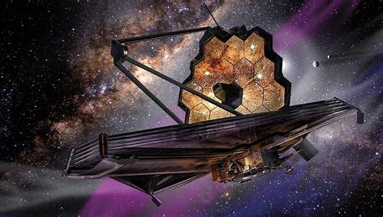
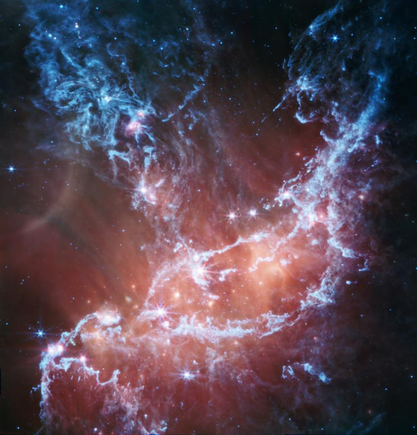
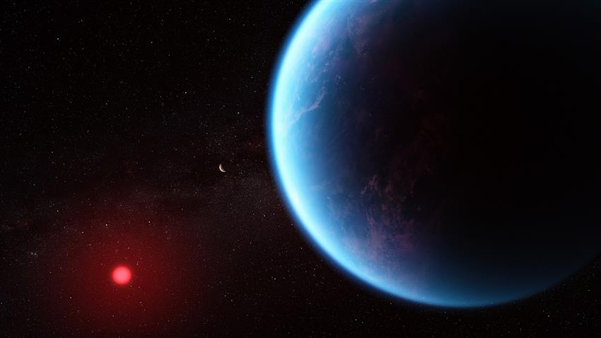
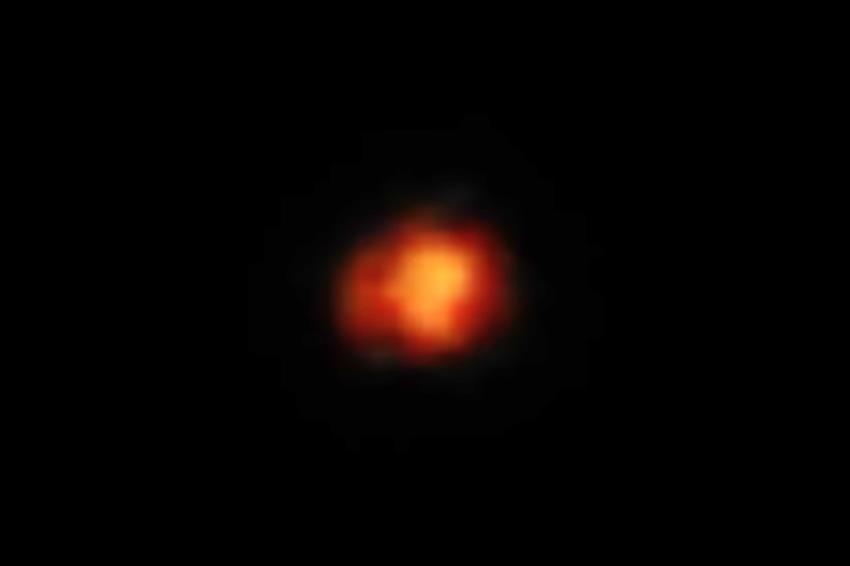

James Webb Space Telescope Missions
Overview
The James Webb Space Telescope (JWST) is designed to explore the universe and expand our understanding of various cosmic phenomena. Its missions include studying the formation of stars and galaxies, examining the atmospheres of exoplanets, and looking back in time to observe the early universe.
Key Missions
-
Studying Early Universe

JWST will observe light from the first galaxies formed after the Big Bang, helping us understand the formation and evolution of the universe.
-
Star Formation

The telescope will study the processes involved in star formation in various environments, providing insight into the lifecycle of stars.
-
Exoplanet Atmospheres

JWST aims to analyze the atmospheres of distant exoplanets, searching for potential signs of habitability and chemical compositions.
-
Galactic Evolution

By observing galaxies at different stages of evolution, JWST will help scientists understand how galaxies form, evolve, and interact with one another.
-
Solar System Studies

The telescope will also focus on objects within our own solar system, including planets, moons, asteroids, and comets.